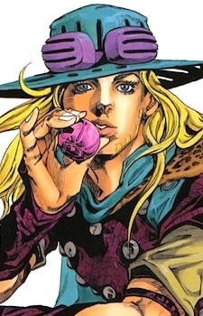

Дата рождения: 1866
Возраст: 24
Раса: Человек
Пол: Мужской
Национальность: Неаполитанец

Джайро Цеппели
Информация
Описание
Джайро Цеппели(яп. ジャイロ・ツェペリ Jairo Tseperi); настоящее имя Джулиус Цезарь Цеппели(ユーリウス・カイザー・ツェペリ Yūriusu Kaizā Tseperi) — является дейтерагонистом седьмой части манги Невероятных приключений ДжоДжо: Гонка «Стальной Шар».
Джайро - мастер спина, родом из Неаполитанского королевства. Он присоединяется к гонке «Стального Шара», чтобы выиграть амнистию для Марко, ребенка, которого ему поручено казнить. Его мастерство спина позже позволяет ему пробудить стенд - Ball Breaker.
Джайро - мастер спина, родом из Неаполитанского королевства. Он присоединяется к гонке «Стального Шара», чтобы выиграть амнистию для Марко, ребенка, которого ему поручено казнить. Его мастерство спина позже позволяет ему пробудить стенд - Ball Breaker.
Манга